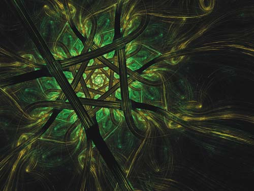

Фрактал - об'єкт, що формується з нерегулярних окремих частин, які подібні цілого об'єкта.
Оскільки більш детальний опис елементів меншого масштабу відбувається по простому алгоритму, описати такий об'єкт можна всього
лише декількома математичними рівняннями.
Фрактальна графіка незамінна при створенні штучних гір, хмар,
морських хвиль. Завдяки фракталам легко зображуються складні об'єкти, образи яких схожі на природні. Фрактали дозволяють
описувати цілі класи зображень, для детального опису яких потрібно відносно мало пам'яті. З іншого боку, фрактали слабо
застосовні до зображень поза цих класів.
Тривимірна графіка (3D - від англ. 3 Dimensions - три виміри) -
три виміри зображення) - розділ комп'ютерної графіки, сукупність прийомів та інструментів (як програмних, так і апаратних),
призначених для зображення об'ємних об'єктів.
Тривимірне зображення на площині відрізняється від
двовимірного тим, що включає побудову геометричної проекції тривимірної моделі сцени на площину (наприклад, екран комп'ютера)
за допомогою спеціалізованих програм (проте з створенням і впровадженням 3D-дисплеїв і 3D-принтерів тривимірна графіка не
обов'язково включає в себе проектування на площину). При цьому модель може як відповідати об'єктам з реального світу
(автомобілі, будівлі, ураган, астероїд), так і бути повністю абстрактної (проекція чотиривимірного фрактала).